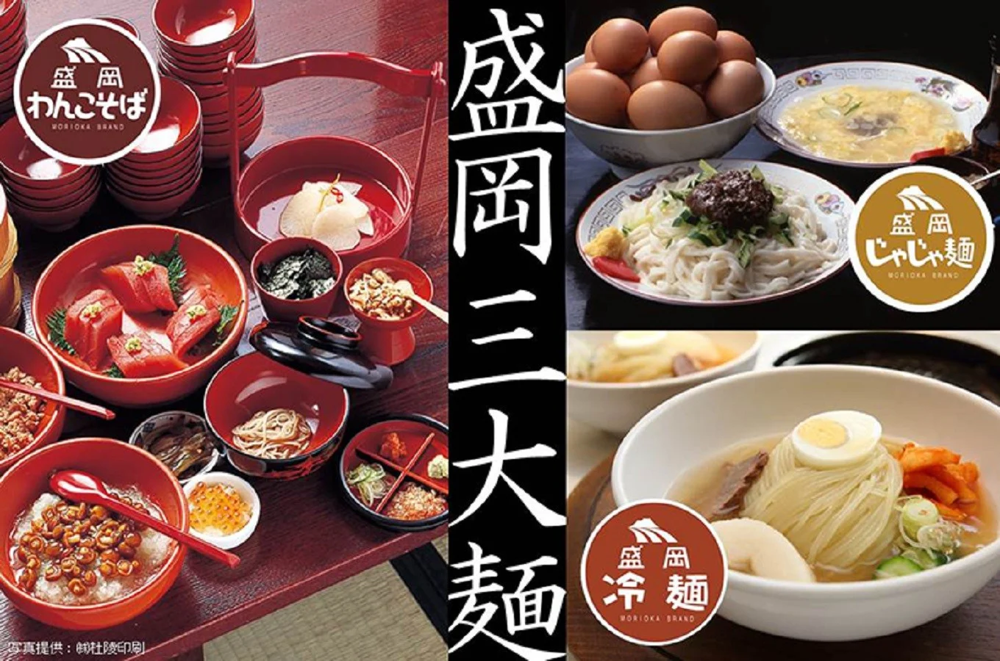

|
盛岡三大麺とは岩手県の県庁所在地・盛岡に根付く麺文化のわんこそば、冷麺、じゃじゃ麺のことです。 盛岡人のソウルフードとも呼べるローカルグルメです。盛岡を訪れたら、ぜひ、コンプリートしてください。
コシの強い麺と、牛骨などでダシを取ったコクと三位のあるスープが相性抜群で、キムチを加えるとまた違った味わいに。 主に焼肉店で提供されています。 一口大に小分けしたお蕎麦を、色々な薬味と共に味わいます。 「もう食べられない」とも思ったら、お給仕がそばを入れるよりも早く蓋をするのが基本的なルール。 100杯超えると、記念手形をもらえるお店もあります。 平打ちの太麺にたっぷりの肉味噌とキュウリ、ネギがのっていて、これをよく混ぜ合わせて食べます。 お好みで酢やラー油、にんにくを加えオリジナルな味付けにするのが通な食べ方。 |
 |
|
岩手県盛岡市では誰もが知る地元密着型のパン屋さんです。店舗にはあらかじめパンがあらんでおらず、
約50種類ほどの中から好みの素材を選んで注文すると、スタッフがその場でコッペパンにサンドしてくれるスタイルです。
こしあん・ピーナツ・ジャム・抹茶・ホイップなどのあまいスイーツ系から、タマゴ・コンビーフ・ハンバーグ・照焼チキンなどの惣菜系まで。 毎年季節限定の具材も登場するなど、組み合わせ次第ではなんと数百種類ものオリジナルサンドメニューが楽しめます。 |
| 岩手県花巻市にあるマルカンビル大食堂のソフトクリームです。10段巻きのソフトクリームは、高さが約25センチもあります。 平日には約300個、休日には約800個も売れています。食べる時は割り箸を使って食べます。 |
|